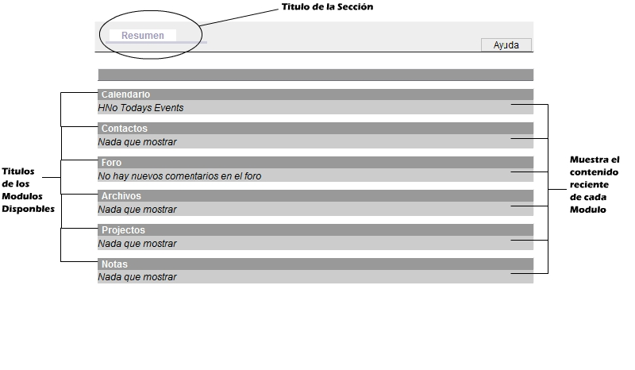

Resumen (Sumary)En el modulo de Resumen muestra la actividad reciente de los usuarios del grupo en el que se haya iniciado sesión, bastara con darle click al titulo del modulo, para ir a a la sección o en los links que se generen en el resumen para poder acceder a la sección seleccionada.
|